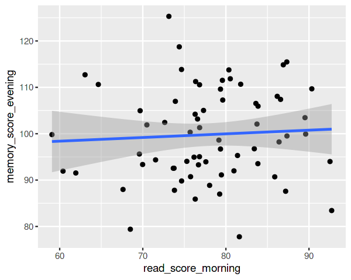
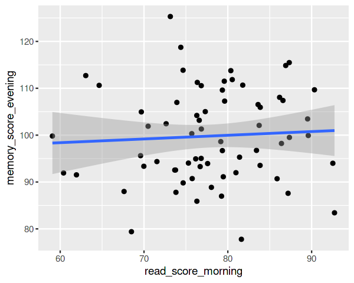

Data Visualisation 1#
Data visualisation is an incredibly useful skill to develop! It can be an invaluable way to explore your data and present your findings.
In the first half of this session, we will discuss what makes a good figure.
In the second half, we will see how we apply these principles of data visualisation in practice, using ggplot2 in R.
Finally, in Data Visualisation Part 2, we will look at how to make your figures pretty and publication-ready.
Slides#
Download .pdf Download .pptx
Try it Out!#
Setup#
We will be using ggplot2 for data visualisation in R. This is the most popular package for data visualisation in R, and is extremely flexible.
library(ggplot2)
library(dplyr)
library(tidyr)
library(readr)
You can import the data we will be using like so:
exp_dat <- read_csv("https://raw.githubusercontent.com/JackEdTaylor/expra-wise23/master/lecture/static/data_vis_dat.csv")
This simulated dataset contains scores in a reading task and a memory task from N=67 participants at three times in the day: morning, midday, and evening.
print(exp_dat)
# A tibble: 201 × 4
subj_id time read_score memory_score
<chr> <chr> <dbl> <dbl>
1 s01 morning 76.8 67.2
2 s01 midday 95.7 98.4
3 s01 evening 94.3 95.0
4 s02 morning 79.5 54.2
5 s02 midday 97.2 88.5
6 s02 evening 98.1 91.1
7 s03 morning 76.2 69.1
8 s03 midday 91.1 98.2
9 s03 evening 85.2 94.9
10 s04 morning 89.5 92.5
# ℹ 191 more rows
The ggplot2 “Canvas”#
When we create a ggplot2 object, the first function we use is ggplot(). The first argument is the dataframe we would like to plot. The second argument contains the aes() specifications, which says which variables in the data should be mapped to which aesthetics.
Let’s see an example, where we say we want to plot reading scores from exp_dat on the x axis.
ggplot(exp_dat, aes(x = read_score))
What gives - where is our plot?
Well, we’ve told ggplot2 what to put on the x axis, but we haven’t said what to actually do with it!
We’ve created a “blank canvas” - now we need to add plot objects. In ggplot2 these are referred to as Geoms, and we add them with geom_* functions.
Plotting Distributions#
We can plot a histogram with the geom_histogram() function. We can simply add this to our code from before. ggplot2 will then automatically know that the y axis should contain counts.
ggplot(exp_dat, aes(x = read_score)) +
geom_histogram()
`stat_bin()` using `bins = 30`. Pick better value with `binwidth`.
Notice that we get a warning from ggplot2 that it is using the default of bins = 30 for the geom_histogram() function, which means there are a total of 30 bins. It is recommended to pick a number of bins, or a bin width, that makes sense for your data. For example, if we want each bin to have a width of 10, we could write:
ggplot(exp_dat, aes(x = read_score)) +
geom_histogram(binwidth = 10)
Similarly, we can plot the empirical probability density with the geom_density() function.
ggplot(exp_dat, aes(x = read_score)) +
geom_density()
Check your Knowledge!#
a) Plot the density of memory scores.
b) Plot a histogram of memory scores, with a bin width of 5.
c) Plot a histogram of memory scores, with 5 bins overall.
Solutions#
Show code cell content
# a
ggplot(exp_dat, aes(x = memory_score)) +
geom_density()
# b
ggplot(exp_dat, aes(x = memory_score)) +
geom_histogram(binwidth = 5)
# c
ggplot(exp_dat, aes(x = memory_score)) +
geom_histogram(bins = 5)
Comparing Distributions by Group#
Let’s say we also want to plot the distribution of reading scores for each experimental session separately. We can do this by saying we want the time variable ("morning", "midday", "evening") to be mapped to the colour aesthetic.
ggplot(exp_dat, aes(x = read_score, colour = time)) +
geom_density()
This shows us that reading scores were poorest in the morning, and best at midday. Other useful ways to compare distributions include the violin plot. A violin plot is a density plot mirrored across zero.
This time, we want the time of day to be on the x axis, and the reading scores to be on the y axis.
ggplot(exp_dat, aes(x=time, y=read_score)) +
geom_violin()
One of the nice things about ggplot2 is that the geom_* functions are additive. We can just add geom objects on top of one another. For example, you may want to place a boxplot on top of a violin plot. You can see the ggplot2 documentation for details on how to interpret the boxplot.
ggplot(exp_dat, aes(x=time, y=read_score)) +
geom_violin() +
geom_boxplot()
Finally, we can also just create a categorical scatter plot, plotting individual points in the data with geom_point().
ggplot(exp_dat, aes(x=time, y=read_score)) +
geom_point()
This is sometimes easier to read if we add “jitter” (random noise) to the x axis, rather than plotting all points in a line. We can do this with the position_jiter() function. The width argument tells ggplot2 how wide we want the jittered points to be.
ggplot(exp_dat, aes(x=time, y=read_score)) +
geom_point(position = position_jitter(width = 0.2))
Check your Knowledge!#
a) Overlay density plots of memory scores for each experimental session. Notice any similarities/differences to the pattern with reading scores?
b) Create a categorical scatter plot of memory scores for each session, with a small amount of random jitter, and overly on top of a violin plot.
Solutions#
Show code cell content
# a
ggplot(exp_dat, aes(x = memory_score, colour = time)) +
geom_density()
# b
ggplot(exp_dat, aes(x=time, y=memory_score)) +
geom_violin() +
geom_point(position = position_jitter(width=0.1))

Scatter Plots#
Let’s look at the relationship between reading scores and memory scores with geom_point().
ggplot(exp_dat, aes(x=read_score, y=memory_score)) +
geom_point()
This looks like a positive correlation! It seems to say that participants’ reading scores and memory scores are correlated. We can plot this relationship with the geom_smooth() function.
ggplot(exp_dat, aes(x=read_score, y=memory_score)) +
geom_smooth()
`geom_smooth()` using method = 'loess' and formula = 'y ~ x'
This plots a LOESS model to predict memory score as a function of reading score - this is a non-linear estimate of the local relationship. The middle blue line shows the estimated relationship, and the 95% confidence interval.
If we want to fit a simple linear model instead, we can just pass method = "lm" to the function.
ggplot(exp_dat, aes(x=read_score, y=memory_score)) +
geom_smooth(method = "lm")
`geom_smooth()` using formula = 'y ~ x'
Check your Knowledge!#
a) Overlay the linear model estimates from geom_smooth() on top of a scatter plot of all points.
b) Does this correlation differ by experimental session time? Find a way to plot the scatter plot with linear models fit to each experimental session time separately. What conclusion do you draw from this plot?
c) Would you reach the same conclusion with a loess model?
Solutions#
Show code cell content
# a
ggplot(exp_dat, aes(x=read_score, y=memory_score)) +
geom_point() +
geom_smooth()
# b
ggplot(exp_dat, aes(x=read_score, y=memory_score, colour=time)) +
geom_point() +
geom_smooth(method="lm")
# c
ggplot(exp_dat, aes(x=read_score, y=memory_score, colour=time)) +
geom_point() +
geom_smooth(method="loess")
`geom_smooth()` using method = 'loess' and formula = 'y ~ x'
`geom_smooth()` using formula = 'y ~ x'
`geom_smooth()` using formula = 'y ~ x'
Combining Data Visualisation with Data Wrangling#
Let’s have another look at the data. Notice that each participant occurs multiple times - we have one row for each combination of subj_id and time.
print(exp_dat)
# A tibble: 201 × 4
subj_id time read_score memory_score
<chr> <chr> <dbl> <dbl>
1 s01 morning 76.8 67.2
2 s01 midday 95.7 98.4
3 s01 evening 94.3 95.0
4 s02 morning 79.5 54.2
5 s02 midday 97.2 88.5
6 s02 evening 98.1 91.1
7 s03 morning 76.2 69.1
8 s03 midday 91.1 98.2
9 s03 evening 85.2 94.9
10 s04 morning 89.5 92.5
# ℹ 191 more rows
Let’s imagine we want to plot the correlation between each participants reading scores at different times of day. How would we do this?
The problem is that the reading scores from all times of day are in the same column - we are in Long Format. We can simply pivot our data into Wide Format.
pivot_wider(exp_dat, id_cols=subj_id, names_from=time, values_from=read_score)
# A tibble: 67 × 4
subj_id morning midday evening
<chr> <dbl> <dbl> <dbl>
1 s01 76.8 95.7 94.3
2 s02 79.5 97.2 98.1
3 s03 76.2 91.1 85.2
4 s04 89.5 110. 100.
5 s05 76.7 101. 103.
6 s06 73.1 92.7 98.4
7 s07 76.8 99.7 97.0
8 s08 79.6 108. 99.8
9 s09 81.6 99.9 99.9
10 s10 68.5 102. 93.2
# ℹ 57 more rows
If we pipe this into our plot, we can plot the correlation between participants’ morning and evening reading scores like so:
exp_dat |>
pivot_wider(id_cols=subj_id, names_from=time, values_from=read_score) |>
ggplot(aes(morning, evening)) +
geom_point() +
geom_smooth(method="lm")
`geom_smooth()` using formula = 'y ~ x'
This shows that participants’ scores are somewhat correlated. This is related to the idea of test-retest reliability.
Check your Knowledge!#
a) Plot the correlation between participants’ morning and midday memory scores.
b) Tricky! Plot the correlation between morning scores in the reading test and evening scores in the memory test.
Solutions#
Show code cell content
# a
exp_dat |>
pivot_wider(id_cols=subj_id, names_from=time, values_from=memory_score) |>
ggplot(aes(midday, morning)) +
geom_point() +
geom_smooth(method="lm")
# b
exp_dat |>
pivot_wider(id_cols=subj_id, names_from=time, values_from=c(read_score, memory_score)) |>
ggplot(aes(read_score_morning, memory_score_evening)) +
geom_point() +
geom_smooth(method="lm")
`geom_smooth()` using formula = 'y ~ x'
`geom_smooth()` using formula = 'y ~ x'
 
